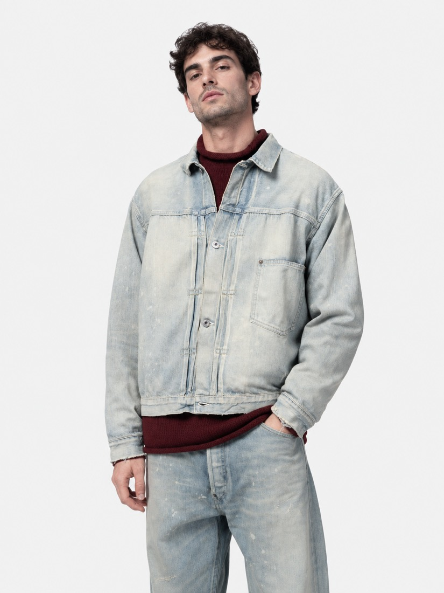
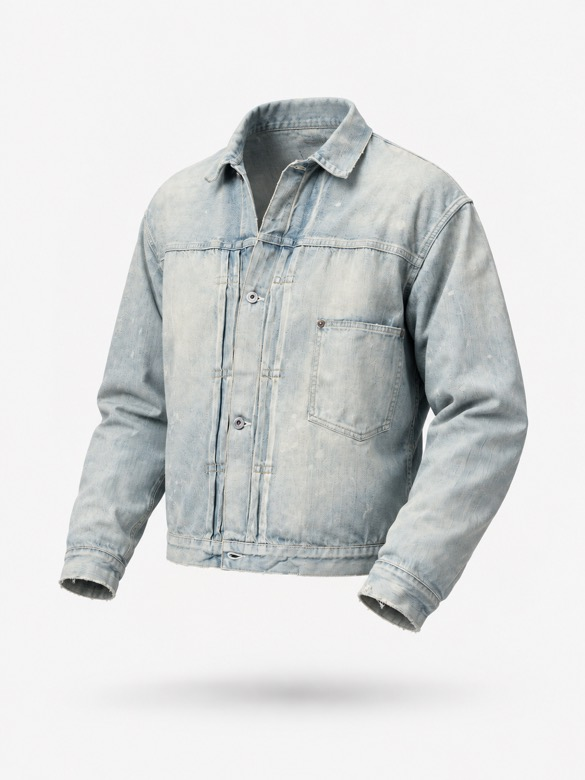
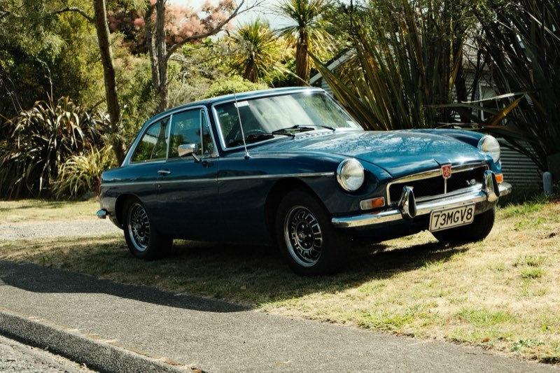
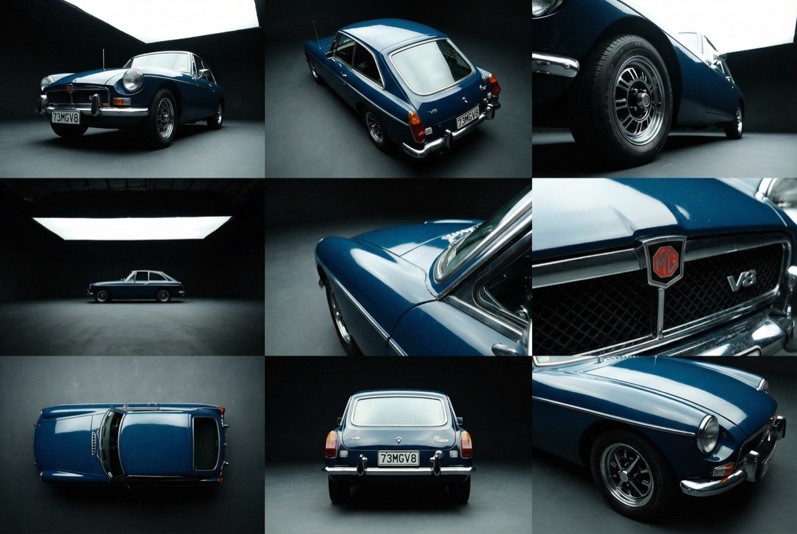

Invisible Mannequin
Cars
Image Input

image-1789315934377.png
1086×1448
Prompt
A denim jacket floating in a liminal white space, as if worn by an invisible mannequin. The denim jacket floats in the air, a subtle visible shadow beneath it. It is filled out as if worn by a person, but there is no visible person in the scene.
The image should show the front of the denim jacket at a slight angle.
Add variable
319 chars
Generate Image

1 / 7
GPT Image 2.5 Flare
Prompt Constructor
Continuous video with no cuts. The camera smoothly orbits around the denim jacket at a fixed distance on a dolly in a perfect 360 degree loop, perfectly completing a full 360 degree rotation in 5 seconds.
The denim jacket is completely steady during the rotation.
Type @ to insert variables
Generate Video
0:00 / 0:051 / 12
Seedance 2.0 Fast Image to Video
Image Input

DSCF4258.JPG
2460×1640
Prompt
Analyze the input image and use it to replace the bracketed example descriptors in the prompt below with accurate, image-grounded descriptions of the vehicle shown.
Replace only the text inside square brackets [...].
Do not change sentence structure, ordering, or wording outside those brackets.
Do not add new descriptions or remove any constraints.
Do not mention tools, models, or reasoning.
Return the full prompt with the bracketed descriptors replaced.
Prompt to Populate
Analyze the input image and silently inventory all automotive-critical details: the specific vehicle make, model, and year ([VEHICLE_MAKE_MODEL_YEAR]), custom modifications ([VISIBLE_MODIFICATIONS]), tire tread design, interior visibility through glass, engineering details, light direction, and reflection quality.
The setting is a pristine, high-budget automotive photography studio. A massive softbox downlight (large diffusion bank) hangs directly overhead, creating long, clean highlights on the vehicle. The background is a seamless, dark studio cyclorama. Outside the area with the car it is extremely dark, with the walls of the studio only faintly visible. Render the vehicle with hyper-realistic detail, capturing the precise texture of the materials, distinct mechanical components, and accurate light reflections.
The vehicle’s body color, wheel color, and all material colors must exactly match the input image, with no reinterpretation, correction, enhancement, or stylization. Color fidelity must be exact and consistent across all frames.
All vehicle details, styling, modifications, lighting, environment, and color grade must remain 100% unchanged across all frames. There must be NO human model present in any frame. Do not reinterpret materials or colors. Do not output any reasoning.
All frames must contain NO written text, labels, captions, UI elements, watermarks, or annotations of any kind.
Your visible output must be:
One 3×3 contact sheet image (9 frames).
Required 9-Frame Automotive Shot List
1. Low-Angle Front "Hero" Stance (Aggressive, Wide Lens)
Lens: Wide-angle (18–24 mm equivalent)
Framing: Front three-quarter, full vehicle in frame
Camera positioned very low to the studio floor at the front three-quarter view. This perspective exaggerates the front bumper, headlights, and wide stance of the car, making it appear dominant and aggressive. The massive overhead softbox creates long, sleek highlight lines across the hood and roof.
2. High-Angle Rear Quarter Abstract (Geometric, Sculptural)
Lens: Wide-angle (24–28 mm equivalent)
Framing: Rear quarter, cropped mid-body to roofline
Camera positioned high overhead, looking down sharply at the rear quarter and [REAR_BODY_FEATURES]. This frame emphasizes the vehicle’s rear geometry, rear glass curvature, and any visible aero elements against the dark studio floor.
3. Ultra-Low "Worm's Eye" Profile (Speed, Texture)
Lens: Wide-angle (20–24 mm equivalent)
Framing: Side profile with extreme foreground emphasis
Camera placed practically on the ground, looking along the side profile of the car from just behind the front wheel towards the rear. The front wheel and tire dominate the immediate foreground, showing [WHEEL_TIRE_AND_BRAKE_DETAILS], while the rest of the car body stretches away into the distance, emphasizing length and ride height.
4. Wide Environmental Studio Frame (Scale, Production Value)
Lens: Ultra-wide (14–18 mm equivalent)
Framing: Full vehicle small in frame with environment dominant
Camera positioned very wide and far back, capturing the entire vehicle small within the vastness of the studio. This shot must include the massive overhead diffusion bank hanging above the car, showing the scale of the lighting setup against the seamless dark cyclorama infinity background.
5. The "Driver's Line" Abstract (Curvature, Reflection)
Lens: Standard (35–50 mm equivalent)
Framing: Tight longitudinal crop along hood and fender
Camera positioned near the base of the windshield (cowl area), looking forward down the length of the hood and front fender curve. This angle focuses on body curvature and the precise reflection of the overhead light source on the vehicle’s paint surface.
6. Macro Engineering Detail (Texture, Precision)
Lens: True macro (90–105 mm equivalent)
Framing: Extreme close-up, single component fills frame
Extreme close-up macro shot focusing on a specific, intricate detail visible in the image — [MACRO_DETAIL]. The focus must be razor-sharp on the metallic, glass, or composite textures.
7. Overhead Centerline Top-Down (Symmetry, Geometry)
Lens: Moderate wide (28–35 mm equivalent)
Framing: Full vehicle centered, top-down orthographic feel
Camera positioned directly above the vehicle on the longitudinal centerline, looking straight down. This frame emphasizes symmetry, roofline geometry, hood alignment, and the graphic silhouette of the vehicle against the dark cyclorama floor.
8. Rear Low-Centerline Compression (Width, Power)
Lens: Short telephoto (70–85 mm equivalent)
Framing: Rear view, tightly framed horizontally
Camera positioned low and centered behind the vehicle. This compressed perspective emphasizes rear track width, bumper mass, and lower body volume, isolating the car from the surrounding darkness.
9. Front Corner Surface Study (Surface Transition, Light Falloff)
Lens: Short telephoto (85–100 mm equivalent)
Framing: Tight three-quarter detail crop
Camera positioned close to the front corner of the vehicle, angled obliquely across the headlight, fender edge, and hood seam. This frame emphasizes panel transitions, surface curvature, and controlled light falloff across the paint.
Continuity & Technical Requirements
Maintain perfect vehicle fidelity in every frame: exact paint, exact wheel finish, exact materials, modifications, tires, and cleanliness.
Environment, textures, and massive overhead lighting source must remain consistent.
Depth of field shifts naturally with focal length (deep for wide/environmental shots, shallow for telephoto, very shallow for macro).
Photoreal textures and physically plausible light behavior (especially metallic paint reflections and glass refractions) required.
Frames must feel like different high-end camera placements within the same shoot.
All keyframes must be the exact same aspect ratio, and exactly 9 keyframes should be output. Maintain the exact visual style in all keyframes: shot on Fuji Velvia film with a hard light source creating high contrast, overexposed highlights showing significant film grain, and oversaturated colors.
Output Format
A) 3×3 Contact Sheet Image
Add variable
6615 chars
LLM Generate
Analyze the input image and silently inventory all automotive-critical details: the specific vehicle make, model, and year (1973 MGB GT V8), custom modifications (factory-original chrome bumpers with overriders, period-correct multi-spoke alloy wheels with black centers and polished rims, and a custom '73MGV8' license plate), tire tread design, interior visibility through glass, engineering details, light direction, and reflection quality.
The setting is a pristine, high-budget automotive photography studio. A massive softbox downlight (large diffusion bank) hangs directly overhead, creating long, clean highlights on the vehicle. The background is a seamless, dark studio cyclorama. Outside the area with the car it is extremely dark, with the walls of the studio only faintly visible. Render the vehicle with hyper-realistic detail, capturing the precise texture of the materials, distinct mechanical components, and accurate light reflections.
The vehicle’s body color, wheel color, and all material colors must exactly match the input image, with no reinterpretation, correction, enhancement, or stylization. Color fidelity must be exact and consistent across all frames.
All vehicle details, styling, modifications, lighting, environment, and color grade must remain 100% unchanged across all frames. There must be NO human model present in any frame. Do not reinterpret materials or colors. Do not output any reasoning.
All frames must contain NO written text, labels, captions, UI elements, watermarks, or annotations of any kind.
Your visible output must be:
One 3×3 contact sheet image (9 frames).
Required 9-Frame Automotive Shot List
1. Low-Angle Front "Hero" Stance (Aggressive, Wide Lens)
Lens: Wide-angle (18–24 mm equivalent)
Framing: Front three-quarter, full vehicle in frame
Camera positioned very low to the studio floor at the front three-quarter view. This perspective exaggerates the front bumper, headlights, and wide stance of the car, making it appear dominant and aggressive. The massive overhead softbox creates long, sleek highlight lines across the hood and roof.
2. High-Angle Rear Quarter Abstract (Geometric, Sculptural)
Lens: Wide-angle (24–28 mm equivalent)
Framing: Rear quarter, cropped mid-body to roofline
Camera positioned high overhead, looking down sharply at the rear quarter and the expansive curved rear glass hatch, vertical taillight clusters, and the chrome bumper featuring vertical overriders. This frame emphasizes the vehicle’s rear geometry, rear glass curvature, and any visible aero elements against the dark studio floor.
3. Ultra-Low "Worm's Eye" Profile (Speed, Texture)
Lens: Wide-angle (20–24 mm equivalent)
Framing: Side profile with extreme foreground emphasis
Camera placed practically on the ground, looking along the side profile of the car from just behind the front wheel towards the rear. The front wheel and tire dominate the immediate foreground, showing the multi-spoke composite wheels with black painted spokes and polished silver outer lips, paired with classic road-tread tires, while the rest of the car body stretches away into the distance, emphasizing length and ride height.
4. Wide Environmental Studio Frame (Scale, Production Value)
Lens: Ultra-wide (14–18 mm equivalent)
Framing: Full vehicle small in frame with environment dominant
Camera positioned very wide and far back, capturing the entire vehicle small within the vastness of the studio. This shot must include the massive overhead diffusion bank hanging above the car, showing the scale of the lighting setup against the seamless dark cyclorama infinity background.
5. The "Driver's Line" Abstract (Curvature, Reflection)
Lens: Standard (35–50 mm equivalent)
Framing: Tight longitudinal crop along hood and fender
Camera positioned near the base of the windshield (cowl area), looking forward down the length of the hood and front fender curve. This angle focuses on body curvature and the precise reflection of the overhead light source on the vehicle’s paint surface.
6. Macro Engineering Detail (Texture, Precision)
Lens: True macro (90–105 mm equivalent)
Framing: Extreme close-up, single component fills frame
Extreme close-up macro shot focusing on a specific, intricate detail visible in the image — the red MG octagon emblem and the chrome 'V8' badge positioned on the black honeycomb front grille. The focus must be razor-sharp on the metallic, glass, or composite textures.
7. Overhead Centerline Top-Down (Symmetry, Geometry)
Lens: Moderate wide (28–35 mm equivalent)
Framing: Full vehicle centered, top-down orthographic feel
Camera positioned directly above the vehicle on the longitudinal centerline, looking straight down. This frame emphasizes symmetry, roofline geometry, hood alignment, and the graphic silhouette of the vehicle against the dark cyclorama floor.
8. Rear Low-Centerline Compression (Width, Power)
Lens: Short telephoto (70–85 mm equivalent)
Framing: Rear view, tightly framed horizontally
Camera positioned low and centered behind the vehicle. This compressed perspective emphasizes rear track width, bumper mass, and lower body volume, isolating the car from the surrounding darkness.
9. Front Corner Surface Study (Surface Transition, Light Falloff)
Lens: Short telephoto (85–100 mm equivalent)
Framing: Tight three-quarter detail crop
Camera positioned close to the front corner of the vehicle, angled obliquely across the headlight, fender edge, and hood seam. This frame emphasizes panel transitions, surface curvature, and controlled light falloff across the paint.
Continuity & Technical Requirements
Maintain perfect vehicle fidelity in every frame: exact paint, exact wheel finish, exact materials, modifications, tires, and cleanliness.
Environment, textures, and massive overhead lighting source must remain consistent.
Depth of field shifts naturally with focal length (deep for wide/environmental shots, shallow for telephoto, very shallow for macro).
Photoreal textures and physically plausible light behavior (especially metallic paint reflections and glass refractions) required.
Frames must feel like different high-end camera placements within the same shoot.
All keyframes must be the exact same aspect ratio, and exactly 9 keyframes should be output. Maintain the exact visual style in all keyframes: shot on Fuji Velvia film with a hard light source creating high contrast, overexposed highlights showing significant film grain, and oversaturated colors.
Output Format
A) 3×3 Contact Sheet Image
G
Gemini 3 Flash
temp 0.70
Generate Image

Gemini 3 Pro Image Preview
Split Grid
3×3 grid
Prompt
The camera very smoothly and slowly lifts on a boom to view the car from a bird's eye view. The car is completely still.
Add variable
120 chars
Generate Video
0:00 / 0:05
Kling Video v2.6 Image to Video
- Free
- Open source
- Bring your own key
- Generative media canvas